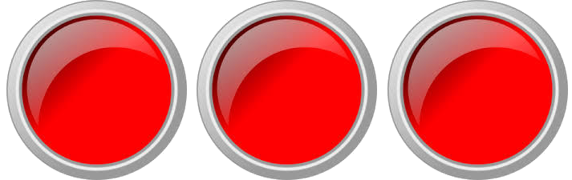
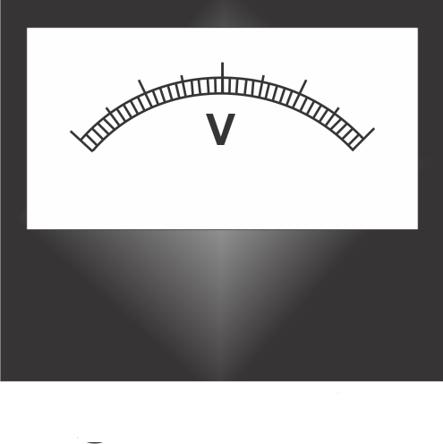
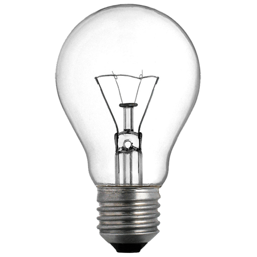

Voltmeter

Ammeter
Voltmeter
Ammeter

Instruction
Step 1: Set the first knob.
Step 2: Make the proper connection by clicking the node as instructed below. If the wire is misplaced, click the node number to deattach the nodes' wire.
Step 3: Click "Check" button.
if connection is correct, an alert appers. Click ok. Now, go to step 4.
if connection is wrong, an alert appers. Click ok. Now, go to step 3.
Step 4: Check the connection and either deattach the incorrect wire connection or Click on reset button and start from step 1.
Step 5: Switch on the MCB.
Step 6: Rotate the Knob by the help of slider.
Step 7: Take readings from Voltmeter and Ammeter by clicking add To table button.
Step 8: Change the value of by rotating the knob and keep adding the value on table.
Step 9: After taking minimum 6 readings, click the "Graph" button.
Step 10: Click "Print" button, to print the full connections with graph and table, if needed.
Step 11: Click restart and change the baising option and follow the steps from 2 to 10.
Step 2: Make the proper connection by clicking the node as instructed below. If the wire is misplaced, click the node number to deattach the nodes' wire.
| From | 1 | 2 | 3 | 4 | 7 | 9 |
| To | 3 | 6 | 8 | 10 | 11 | 4 |
Step 5: Switch on the MCB.
Step 6: Rotate the Knob by the help of slider.
Step 7: Take readings from Voltmeter and Ammeter by clicking add To table button.
Step 8: Change the value of by rotating the knob and keep adding the value on table.
Step 9: After taking minimum 6 readings, click the "Graph" button.
Step 10: Click "Print" button, to print the full connections with graph and table, if needed.
Step 11: Click restart and change the baising option and follow the steps from 2 to 10.
| S.No. | VOLTMETER | AMMETER |